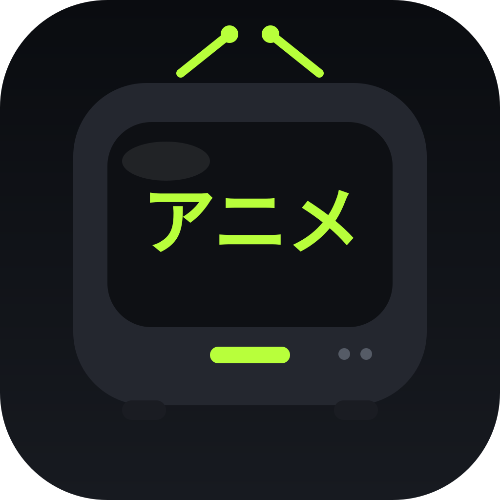

Jelajahi katalog
Temukan anime melalui halaman beranda, kategori jelajah, pencarian, dan detail judul.
01
AnimeGoJelajahi katalog anime, lanjutkan tontonan, simpan episode untuk offline, dan gunakan floating player tanpa harus menetap di satu layar.
Streaming, riwayat, favorit, dan unduhan dalam satu tempat.
Fitur inti disusun supaya aktivitas menonton dan mengelola episode bisa dilakukan dari satu aplikasi.
Temukan anime melalui halaman beranda, kategori jelajah, pencarian, dan detail judul.
01Gunakan kontrol video, pencarian posisi, dan pengaturan kecepatan pemutaran.
02Tampilkan video dalam jendela mengambang di atas aplikasi lain setelah izin overlay diberikan.
03Kelola episode yang diunduh langsung dari halaman Offline. Data tersimpan memakai ruang perangkat.
04Lihat aktivitas menonton dan kembali ke episode yang sebelumnya dibuka.
05Simpan judul pilihan agar lebih mudah ditemukan lagi dari aplikasi.
06Preview tampilan AnimeGo untuk beberapa area utama aplikasi.
Preview di halaman ini adalah ilustrasi antarmuka berdasarkan tema AnimeGo, bukan tangkapan layar langsung dari perangkat.
Unduh berkas APK dari halaman ini, lalu buka file di perangkat Android untuk memulai pemasangan.
Download AnimeGo Instalasi APK dilakukan di luar Google Play. Pastikan sumber file tepercaya.Spesifikasi yang diketahui dari konfigurasi aplikasi dan berkas distribusi.
Langkah umum untuk memasang AnimeGo dari berkas APK.
Tekan tombol Download AnimeGo dan tunggu sampai berkas selesai diunduh.
Buka file animego.apk dari notifikasi unduhan atau aplikasi File Manager.
Jika diminta, izinkan browser atau File Manager memasang aplikasi dari sumber ini, lalu lanjutkan instalasi.